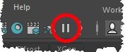

有时，您可能希望打开带有 Bifrost 图表的 Maya 场景，而不立即执行该图表。例如，该图表可能是一个大型模拟，需要很长时间进行初始化，并且您想在运行之前进行更改。
在 Maya 中打开场景之前，请确保在 Maya 的“动画首选项”(Animation Preferences)中将“解算模式”(Evaluation mode)设置为“DG”。
暂停视口。

打开场景。
在执行其他任何操作之前，打开 Bifrost 曲线图编辑器。
暂停图表编译和执行（Ctrl+句点）。
现在，您可以取消暂停视口，并对图表或场景进行任何更改。
当您准备好开始运行图表时，恢复图表编译和执行（Ctrl+句点）。